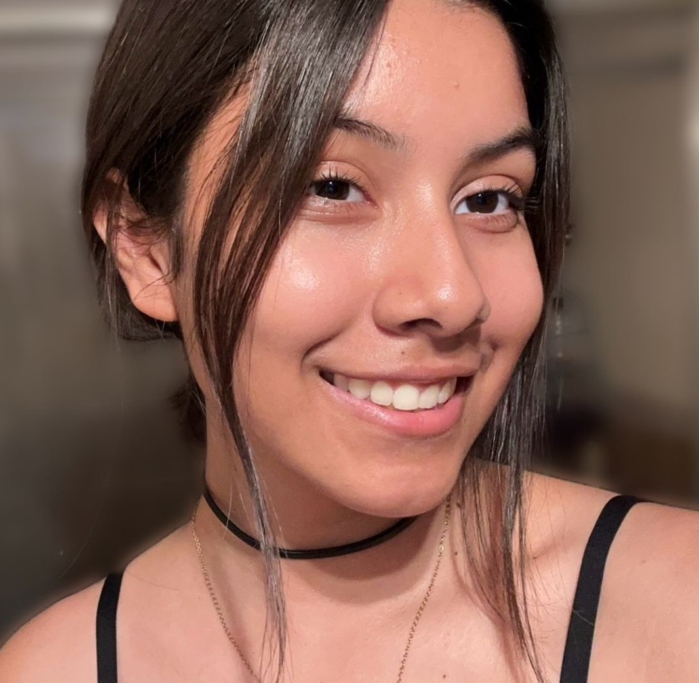

Hola, soy Jimena Deniz

Mexicana de 17 años, estudiante en último año de la preparatoria como Técnica Analista Química. Me fascina aprender diversos ámbitos, tales como: programación, matemáticas, química y artes. Considero que somos una vez en la vida y el inspirar a lograr sueños es uno de mis objetivos, además de colaborar y crecer juntos lo cual nos ayudará a ser, crear y existir plenamente.
Desarrollo Web
Codificar el futuro, desbloquear la creatividad, y dar vida a ideas, es por lo que comencé en el mundo de la programación y gracias a Tecnolochicas Pro desarrollé sitios web con lenguajes como:
Pasiones
Me apasionan STEM, el arte y ser parte de la comunidad LGBTQ+. En STEM, encuentro la curiosidad y la innovación. El arte me brinda libertad creativa, y en la comunidad LGBTQ+, veo la fuerza de la diversidad. Cada uno de estos aspectos enriquece mi vida y me inspira a explorar, crear y abogar por un mundo inclusivo, equitativo e innovador.
Estudiante
Actualmente soy Técnica Analista Química en desarrollo, he concursado en la Olimpiada de Matemáticas Femenil, certificada teórica en cuidado de animales de laboratorio y uso del bioterio, experiencia en el idioma de inglés y apasionada por aprender y adentrarme en el mundo de la técnología.

Jimena Deniz muestra un rápido progreso en la adquisición de habilidades técnicas clave y una gran disposición para colaborar en proyectos. Su actitud positiva y su voluntad de aprender constantemente son cualidades valiosas en el campo de la programación. No tengo dudas de que Jimena Deniz seguirá creciendo y haciendo contribuciones significativas como desarrolladora frontend en el futuro.
Anel Montes
Mentora de Desarrollo Frontend en Tecnolochicas Pro
El compromiso y responsabilidad son solo algunas de las habilidades que Jimena Deniz, posee. Sin duda alguna la toma de riesgos y responsabilidades ha caracterizado al colaborador diariamente, he sido apoyo y complice del crecimeinto profesional y personal permitiendome así acompañar y compartir expriencias para la mejora continua.
Monica Díaz
Compañera de Bootcamp en Tecnolochicas Pro

Jimena Deniz tiene un gran potencial y fortalezas en ella se ve reflejada más el liderazgo , y en destacar su buen trabajo en equipo y saber manejar el trabajo bajo presión teniendo en cuenta siendo eficiente y eficaz. Admiro que Jimena busca siempre la forma de lograr sus objetivos y buscar la forma de llegar a cumplir sus sueño, seguirá creciendo y es una persona llena de éxitos futuros en la vida.
Elizabeth Montes de Oca Moreno
Compañera de Bootcamp en Tecnolochicas Pro